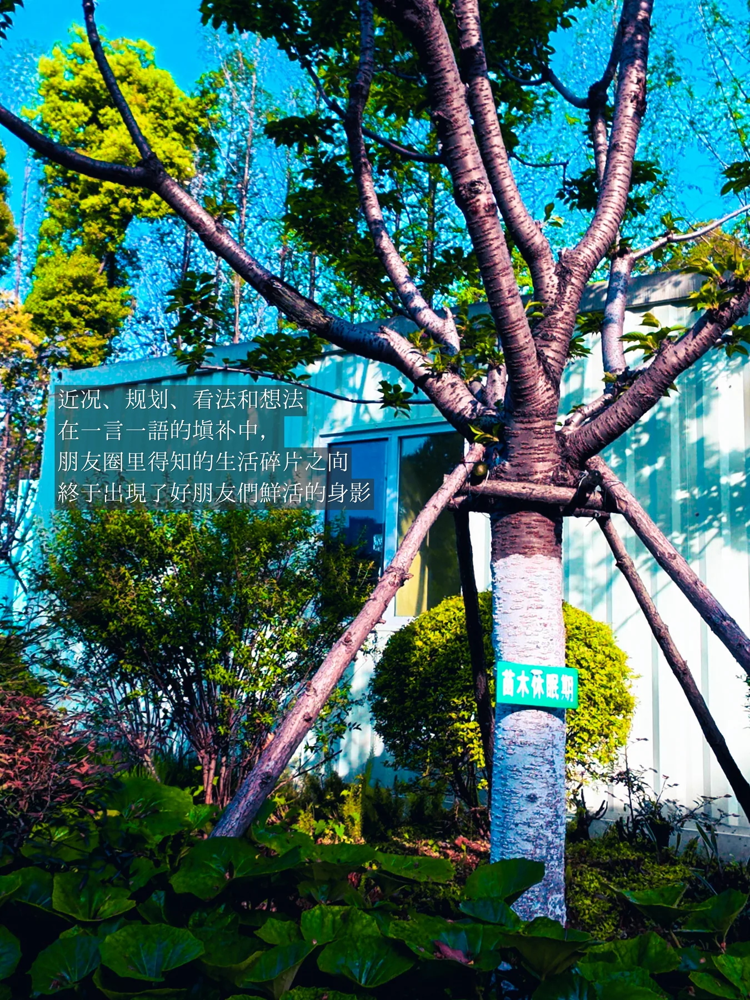
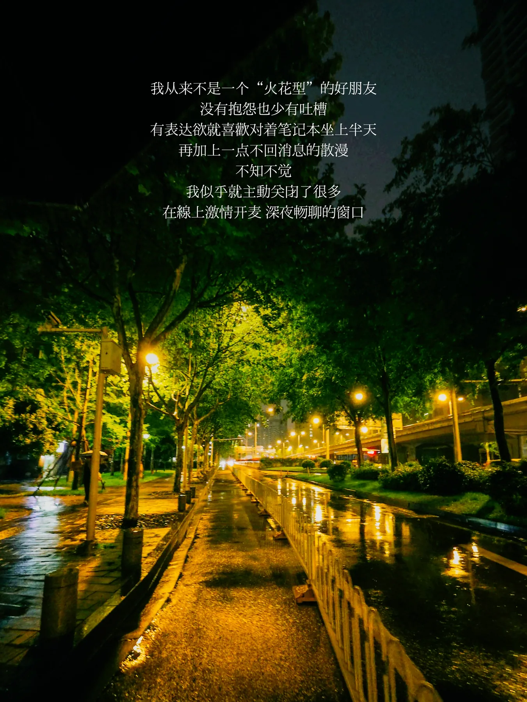
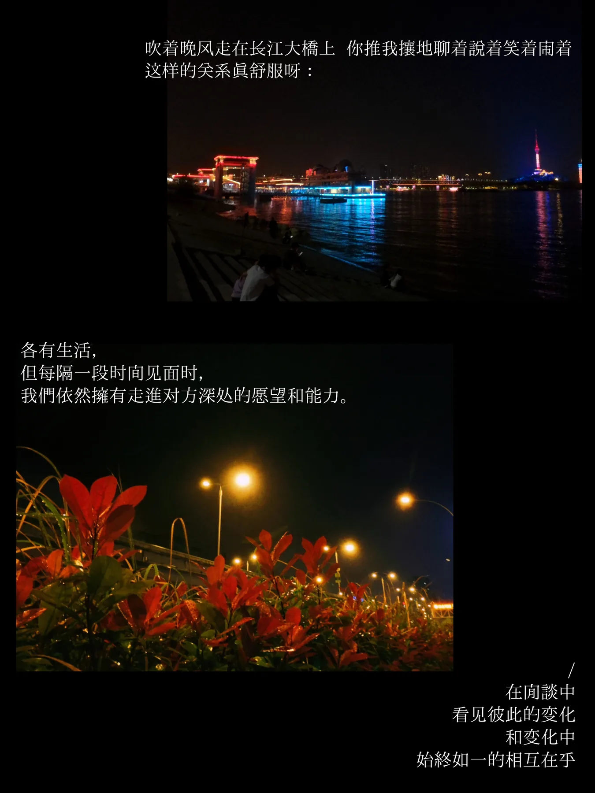
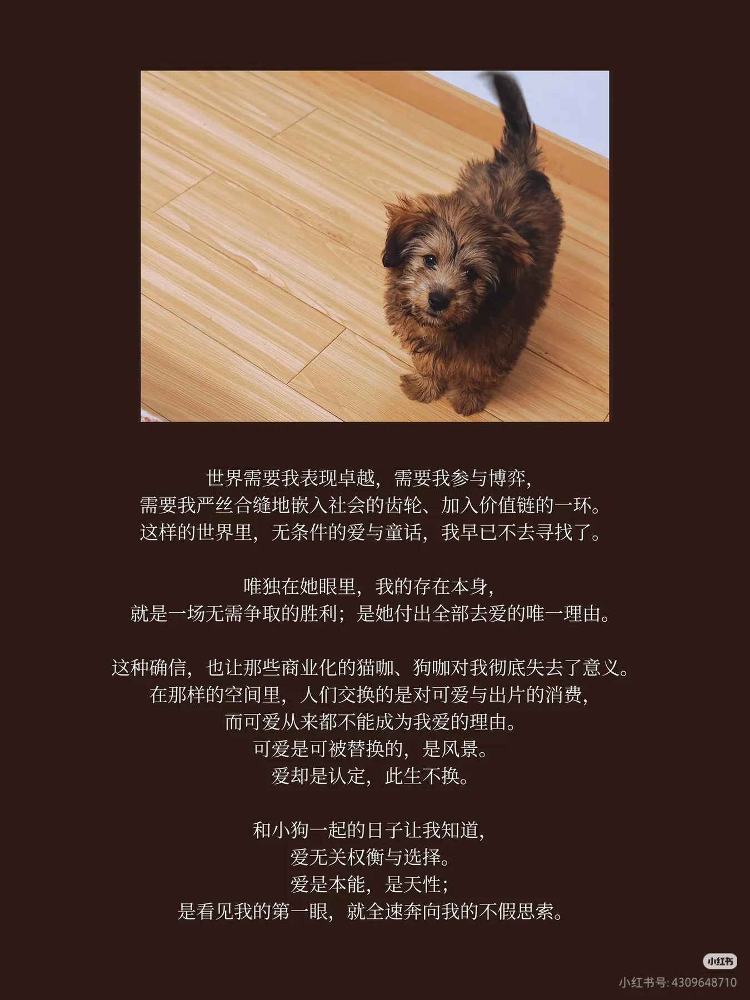
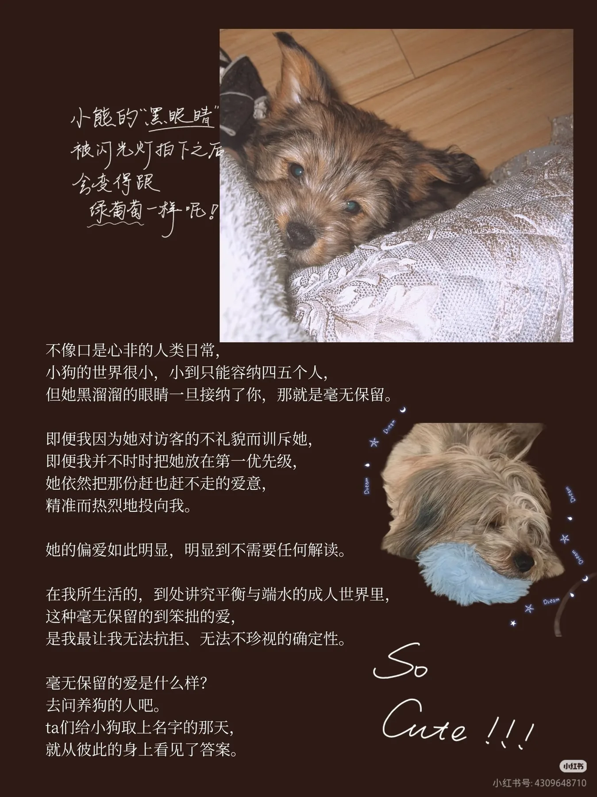
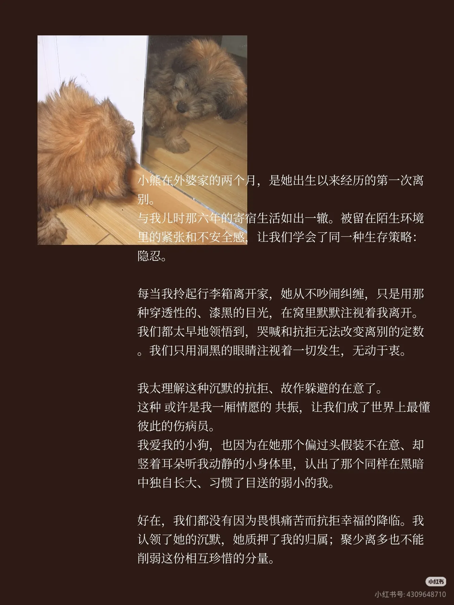
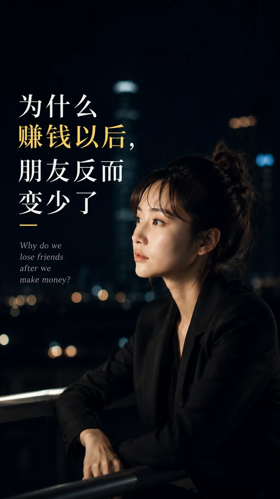
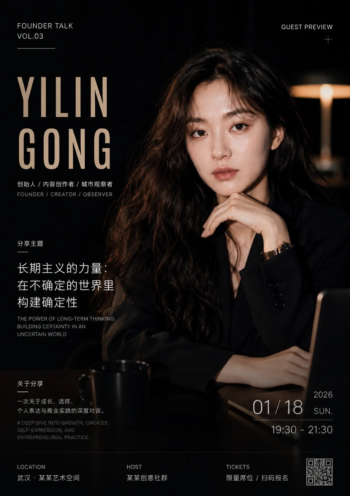
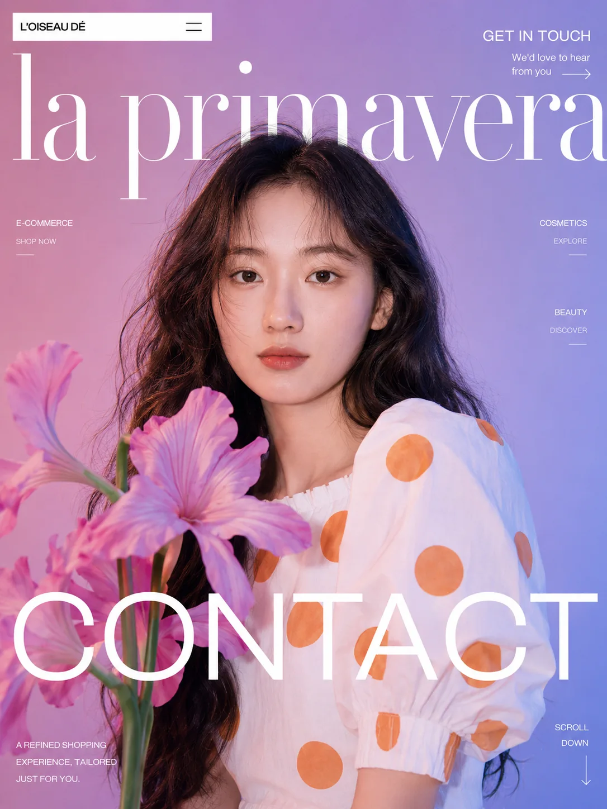
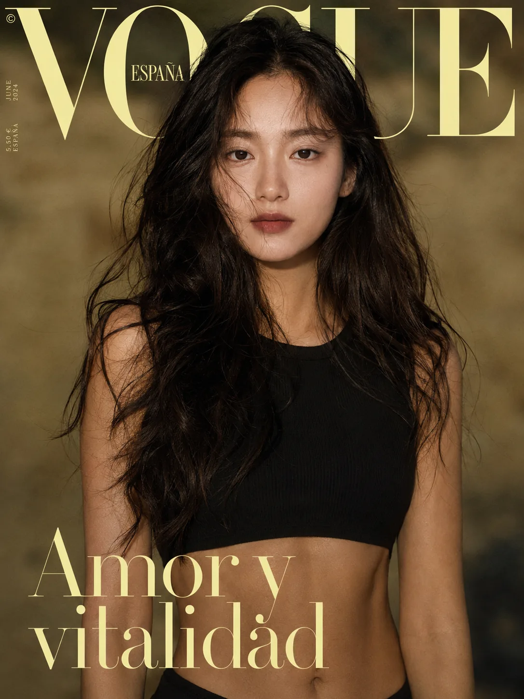

01 / 把想法讲清楚 - Language
我喜欢处理语言之间的缝隙：一个词怎么被理解，一句话为什么会失真，一种文化经验怎样被说给另一个世界的人听。
语言 / 翻译 / 汉教 / 跨文化交流
我喜欢把脑子里的想法、观察和经验，做成可以被读懂、被看见、被使用的东西。
语言、AI 视觉和产品，都是我把想法从脑内带到现实里的方式。
我喜欢处理语言之间的缝隙：一个词怎么被理解，一句话为什么会失真，一种文化经验怎样被说给另一个世界的人听。
让它从我脑子里的东西，变成别人也能看见、能感受到、能走进去的小世界。
把零散的观察和流程，整理成可以被打开、被使用、被反馈的产品原型。让产品解决问题、验证需求、持续迭代。
未完待续
我正在搭建的个人写作账号，围绕旅行、城市、审美、关系、语言和自我整理展开，记录我在不同地方遇见的人、场景和想法。






用 AI 生成和调整的商业视觉实验，包括杂志封面、人物海报、短视频封面、活动宣传图和个人品牌视觉。




收集我正在尝试做成产品的东西：个人网站、知识库、AI workflow、网页原型、小型 MVP...
(详见简历，持续更新中...)
| 方向 | 我能做什么 | 交付物 |
|---|---|---|
| AI 内容创作 | 围绕一个主题或账号定位，完成从选题策划、脚本撰写、素材组织到内容结构搭建的完整流程 | 选题库 / 视频脚本 / 图文内容 / 教学素材 / 内容栏目 |
| 语言与跨文化表达 | 面向不同语言和文化背景的人，重新组织词语、例子和语气，让内容更准确、更自然、更容易被听懂 | 中文教学稿 / 英文润色 / 翻译优化 / 口播稿 / 跨文化内容 |
| AI 商业视觉 | 根据封面、海报、宣传、个人形象等具体场景，设计风格方向并用 AI 生成可展示的视觉素材 | 短视频封面 / 活动海报 / 杂志封面 / 人物写真 / 宣传视觉 |
| AI 产品原型 | 从一个真实需求出发，拆解使用场景、用户路径和核心功能，做出能跑、能演示、能继续迭代的产品原型 | AI 分析工具 / 个人网站 / 作品集页面 / Workflow / MVP Demo |